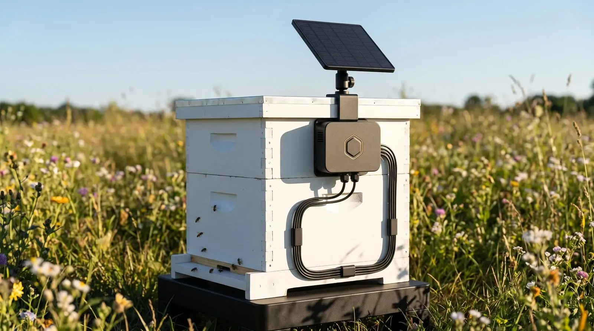
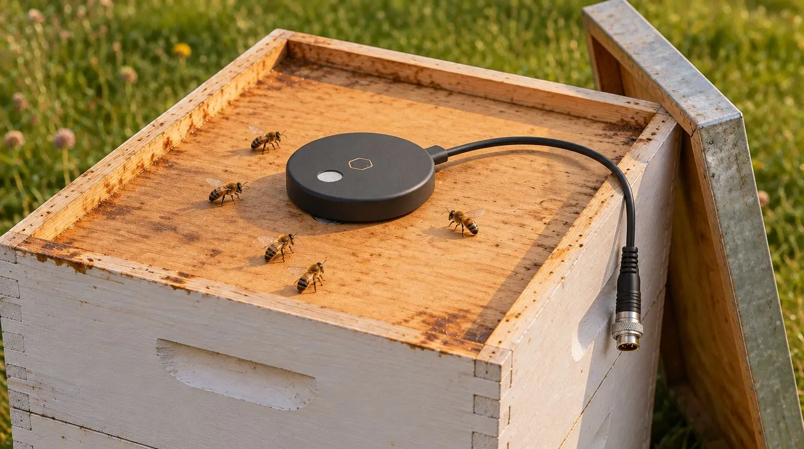
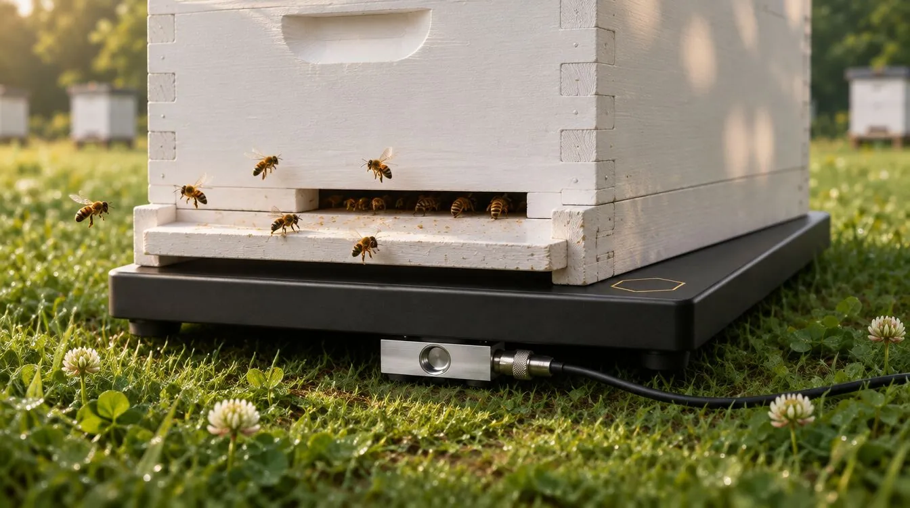
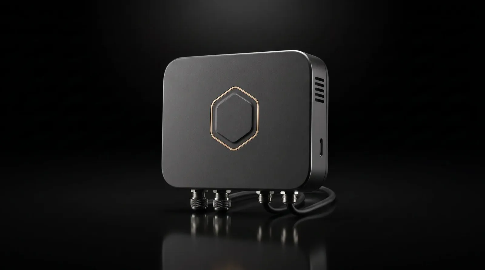

+3 lb today
The foragers are home.
The hive is 3 lb heavier than this morning. Nectar is coming in.
Settings
Season colors
Auto follows today's date.
Saved on this device.
Under the lid, a sensor pod measures CO₂ and humidity.
The same pod listens to the colony's hum.
A probe between the frames tracks the brood, which the bees keep near 94°F.
A scale under the hive shows the nectar flow, winter stores and swarms.
The long night
You can't open the hive every day, and you shouldn't have to. But a lot can happen while the lid is closed.
About half the colony flies off with the old queen, often before you've seen the signs.
A cluster can starve with honey just a few frames away, and you won't know until spring.
Without her, the colony starts to fade. The longer it goes unnoticed, the harder it is to fix.
That blind stretch between visits is the long night. CombGuard was built to stand watch through it.
Meet the guard
CombGuard keeps track of what you can't see between inspections and tells you when something changes, so you open the right hive at the right time.
Concept sketch of CombGuard on a standard Langstroth hive. Drag to look around.
CombGuard Gen 2
Every part has one job, and it's made to live outside with your bees.

Concept renderThe scale slides under a standard Langstroth hive, the pod sits on the inner cover and the case rides on the side. Your boxes stay the same.

Concept renderThe sensor pod rests on the inner cover over the hole, reading the air rising from the colony and listening to its hum.

Concept renderA low plate with a load cell carries the hive. Bees, brood, comb and honey: every pound shows up.

Concept renderScrew-lock GX12 connectors keep the rain out, and let you swap a sensor in the yard without opening the case.
 Concept render
Concept renderA small panel on top of the case charges the battery during the day, so there are no cords to run out to the yard.
swipe, or tap the next photo
What it senses
Drag the strip to explore. Tap a card to flip it over.
Know when the flow is on.
tap to flip ↻Daily weight shows nectar coming in, stores going down through winter and the sudden drop of a swarm.
Feel the brood from outside.
tap to flip ↻A thin probe between two brood frames tracks the brood nest, which a healthy colony keeps near 94°F.
Read the air under the lid.
tap to flip ↻CO₂ and humidity rise and fall with the colony's work, its size and how well the hive is venting.
Hear the hum.
tap to flip ↻A small microphone in the pod listens to the colony between your visits. Changes in the hum can be an early hint that something is different.
Know the weather at the hive.
tap to flip ↻A sensor tucked behind the vent on the case reads the open-air temperature and humidity, so you can compare the hive with the yard.
Runs on sunlight.
tap to flip ↻A small solar panel on top of the case charges the battery during the day, and the battery keeps it running all night.
Hear about it when it matters.
tap to flip ↻When something changes, like a sudden weight drop, CombGuard sends you an email so you know which hive to open.
The long night
Drag the moon across the sky, or tap a time, to see one night at the hive.
+3 lb today
The hive is 3 lb heavier than this morning. Nectar is coming in.
An example night. The readings are illustrative.
The plan
Slide the scale under the hive, set the pod on the inner cover and the probe between two brood frames.
Readings go to your dashboard all day and all night, rain or shine.
When something changes, you get an email, so you know which hive to open.
Live hive
Weight, warmth, air and sound side by side, with the history behind each one. On your laptop or your phone.
Sketch of the dashboard. The numbers are an example.
Where we are
CombGuard Gen 2 is in development. Here's where the build stands.
Tell us how you check your hives and what you wish you knew. Every answer shapes what CombGuard watches for.
Good questions
No. It tells you which hive needs a visit and when. You still open the hive to check the queen, the brood and for mites.
No. Nothing in CombGuard counts varroa mites, so keep up your usual mite checks.
It's built to stay out of their way. The pod sits on top of the inner cover, with its sensors behind a breathable vent membrane the bees can't seal over with propolis. The probe is a thin rod between two frames.
Gen 2 uses your Wi-Fi. A long-range radio version for out-yards without Wi-Fi is planned for Gen 3.
We're still building Gen 2, so there's no price yet. Join the Watch to hear first.
The photos are concept renders and the drawings are concept sketches. The Gen 2 boards are being made now, and we'll share real photos once it's built.
Stand with us
Get build updates and first word when CombGuard is ready for your hives.
Keep bees? Take the beekeeper survey ↗